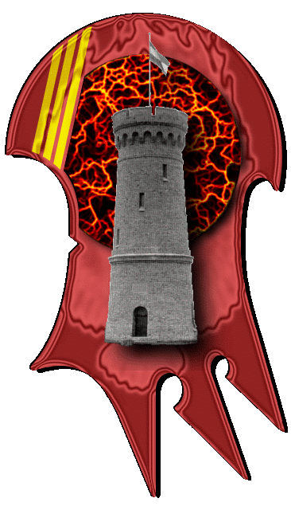

| Übersicht,
Anschläge und Stammtisch (RPG) |
|
Reich Narvalon dankt der Scherbe (3  ) )
|
| Christoph von Eschenbach (RIP) |
Meine besten Glückwünsche an das reich Narvalon, auch ich weilte nur kurz bei den kämpfen, aber ich bin mit jeder verlorenen seele ein wenig mit gestorben und mit jedem geretteten kämpfer habe ich mich gefreut.
Friede auf der scherbe soller motto sein und zusammenarbeit in der Gefahr unser Rückhalt.
Tura zu Ehren
Christoph von eschenbach,
Priester im Dienste des einzig wahren Glaubens an Tura
Zur 3. Stunde am 3.Blumenmond im Jahre 417 |
26.08.04 17:53
|
|
| Izindu-bêth (RIP) |
Die Zauberer von Loh haben gerne ihren Beitrag bei der Verteidigung von Narvalon gegen die Horden des gesichtlosen Untodes geleistet und es war uns eine Ehre Seite an Seite mit so vielen anderen Recken kämpfen zu können.
Und sollte einmal wieder die Dunkelheit hereinbrechen - wollen wir es nicht erhoffen! - werden wir wieder dort stehen, wo es gilt die Freiheit und die Werte der Sieben zu verteidigen.
Izindu-bêth,
Vorsteher von Hort der Erinnerung,
Kardinal im Dienste des einzig wahren Glaubens an Tura
Verkünder des Glaubens an Tura
Zur 3. Stunde am 3.Blumenmond im Jahre 417 |
26.08.04 17:57
|
|
| Aylen von Distelflamme (RIP) |
Wie manche doch um Aufmerksamkeit und Anerkennung lechzen... *schmunzelt*
Nicht der einzelne Krieger oder Magier, oder eine Nation haben dort gesiegt, sondern wir alle, ein Bund der sich in der düstersten Stunde formierte und der Bedrohung trotzte.
Markgräfin Aylen von Distelflamme,
Vorsteherin von Küstenfestung Girangoth,
Moladh an Ealain do Caint,
Verlobte der reizenden Cáilin Arafhen
Zur 3. Stunde am 3.Blumenmond im Jahre 417 |
26.08.04 17:59
|
|
| Llananrion von Fendrakyr (RIP) |
Und ich hoffe, es setzt sich fort, werte Aylen! Zu viel Zwist macht und schwach, stehen wir aber zusammen, so wird sich schon mächtig was sammeln müssen, um eine Aussicht auf Erfolg zu haben...
Markgraf Llananrion von Fendrakyr,
Vorsteher von Fendrakan,
Anführer der glorreichen Nation "Erben Fendrakyrs"
Zur 11. Stunde am 3.Blumenmond im Jahre 417 |
26.08.04 19:45
|
|
Gnaar
 |
Selbstverständlich möchte auch ich mich bei allen bedanken die dabei geholfen haben!
Hach wie habe ich nicht schlecht gestaunt als ich von einer Reise zurück kam und auf einmal 3000 Untotengruppen kurz vor Narvalons Toren standen und langsam in den Pfeilhagel aus den Türmen reinglaufen sind.
Zum Glück ist das nun vorbei und ich hoffe, dass das auch nicht nochmal vorkommt...
Also nochmals vielen Dank an alle Kämpfer, Magier, Turmbauer, Armeebesitzer und natürlich Heiler und Gasthauserbauer die dazu beigetragen haben das die Schlacht so positiv ausgefallen ist!
Sir Gnaar,
Vorsteher von Narvalon,
Priester im Dienste des einzig wahren Glaubens an Pheron
Zur 18. Stunde am 3.Blumenmond im Jahre 417 |
26.08.04 21:26
|
|
| Sean Sharid (RIP) |
auch ich sage dankeschön an alle die dort waren,
es war mir eine ehre mit euch das durchzustehen und siegreich beendet zu haben
sollte das ein weiteres beispiel für kommende bedrohungen sein
gruss Sean
Sean Sharid,
Priester im Dienste des einzig wahren Glaubens an Urvan
Zur 21. Stunde am 3.Blumenmond im Jahre 417 |
26.08.04 22:04
|
|
| Bekki Rosenholz (RIP) |
Ich möchte auch ein herzlichen Dank aussprechen an alle , die geholfen haben auch Nottinghamshire zu retten und die Wiedergänger aufgehalten habe auch eine Stadt unsere Nation zu zerstören..
Danke
Baronesse Bekki Rosenholz,
Vorsteherin von Tadmor,
Anführerin der glorreichen Nation "Wächter von Lolandria",
Verlobte des ehrenwerten Keshan
Zur 23. Stunde am 3.Blumenmond im Jahre 417 |
26.08.04 22:32
|
|
Laurana
  |
Ich kann mich den Worten Marducs nur anschließen.
Danke an alle tapferen Helden aus Nah und Fern, die in dieser schweren Stunde zu uns hielten und die Last der schweren Bürde der erdrückenden Bedrohung teilten.
Dankeschön
Baronesse Laurana Greenleaf,
Vorsteherin von Burg Sternental,
Ehefrau des ehrenwerten Alwyn Greenleaf,
Generalin des Reiches Narvalon
Zur 10. Stunde am 4.Blumenmond im Jahre 417 |
27.08.04 1:09
|
|
| Bithya Mordwingârd (RIP) |
Auch mir war es eine Ehre in dieser großen Schlacht zu helfen!
Falls er nicht stört, würde ich meinen Turm dort einfach noch stehen lassen, wer weiß was noch weiter passiert... Oder aber als Mahnmal *schmunzelt leicht*
Bithya,
Priesterin im Dienste des einzig wahren Glaubens an Tura,
oberste Nationsheilerin,
Verlobte des ehrenwerten Ogrim Doomhammer
Zur 11. Stunde am 4.Blumenmond im Jahre 417 |
27.08.04 1:23
|
|
| Storm Silberpfeil (RIP) |
Auch mir war es eine Ehre und eine Freude,so viele Leute für eine kurze Zeit um ein gemeinsames Ziel ringen zu sehen!
Die Sieben mit Euch allen!
Storm Silberpfeil,
Priesterin im Dienste des einzig wahren Glaubens an Larja,
Anführerin der glorreichen Nation "Larjas Schattenläufer",
Coronal N`Vaelahrn - Schattenlady,
Trägerin einer Ehrung des larjanischen Konvents
Zur 6. Stunde am 5.Blumenmond im Jahre 417 |
27.08.04 5:43
|
|
| Sarin Harfoot (RIP) |
auch ich schließe mich den worten unseres nationsführers an und bedanke mich herzlichst bei allen helfern und helferinen.
falls ich meine dankbarkeit zeigen kann, so lasst es mich wissen....
Sarin Harfoot
Zur 17. Stunde am 5.Blumenmond im Jahre 417 |
27.08.04 8:28
|
|
| Sérafina Ildîrián (RIP) |
Auch ich möchte mich meinem Nationsführer anschließen und danke allen Unterstützern, Heilern und Gasthausbesitzer, welche so frei waren ihre Preise zu senken.
Es war erhebend zu sehen, dass trotz aller Widrigkeiten ein sehr großer Zusammenhalt zwischen den einzelnen Völkern und Nationen herrscht.
Serafina Celaid,
Verlobte des ehrenwerten Gódhel ô Gláneth
Zur 22. Stunde am 5.Blumenmond im Jahre 417 |
27.08.04 9:30
|
|
Übersicht,
Anschläge und Stammtisch (RPG)
|